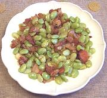

|
Lima Beans with BaconCalifornia | ||||
| Serves: Effort: Sched: DoAhead: |
4 side ** 15 min Yes |
Bacon and lima beans have wonderfully complimentary flavors, as this simple side dish will show - and you just can't get much easier to make. I sometimes make this for breakfast - it goes really well with an egg fried in the same pan. | |||
|
8 8 3 tt |
oz oz oz |
Lima Beans, frozen Bacon, thick (1) Onion Salt & Pepper |
|